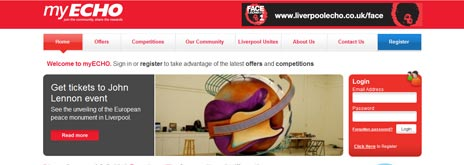
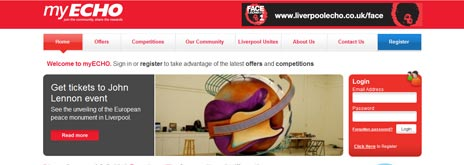

Arsenal FC
I’ve worked as a developer on the Arsenal football club site since it was re-launched in 2008. This comprehensive site is CMS driven and integrates with a range of other services.
This site has a range of templates available through the CMS allowing unique pages and sections of the site to be created by the journalists and administrators using the system.
Other features include match reports, embedded videos, fixture calendar (with ICal feeds), wallpapers & screensavers, facebook integration and player details management.
Development has also been completed for the Junior Gunners and Platinum micro-sites.
My work on this site has been on behalf of an agency in Liverpool.
United Nations World Food Programme
In 2012 I was given the opportunity to work on a project for the United Nations. The system I helped build was an API (kind of like a website that computers, rather than humans, read) that allowed other software to make donations to the World Food Programme, the food distribution arm of the UN.
This system drives websites such as the WFP's wefeedback site pictured above. It can also be used by any other computer system such as supermarket checkouts, internet TVs, restaurant websites/checkouts etc. This allows the WFP to acquire a large number of partners to help raise funds for numerous good causes.
The application is an automatically scalable system so that should a crisis occur somewhere around the world and millions of people rush to donate online the service will increase the amount of servers / bandwidth available to handle all of the donations.
My work on this system has been on behalf of an international agency in Liverpool.
Arsenal Player
After successful completion and continuous development of the main arsenal website I was lucky enough to be given the chance to work on Arsenal Player. This site allows users to play videos and audio streams of live matches, interviews, highlights and more.
A bespoke content management system was developed to allow the admin team to manage where on the site videos appear and schedule when they should be made available.
This site also integrates with the main arsenal.com website advertising the paid for service and showing free content teasers.
My work on this site has been on behalf of an agency in Liverpool.
Sykes Cottages
The Sykes Cottages site allows people to find a cottage, using a range of search options, and to book and pay online.
The site uses a 'live' AJAX search to bring in results and has two-way integration with the search map on which property results are plotted and updated as users filter down to more specific areas. The map itself is interactive and updates the search results when the user clicks on it.
The CMS for this site contains a system for creating 'auto-search' landing pages to help improve search engine optimisation, bring more visitors to the site.
The same system also drives Sykes other brand Hogans Irish Cottages, and the part-translated German version of the Sykes site.
My work, as developer, on this site has been on behalf of an agency in Liverpool.
Everton FC - "Your Everton" Social Network
As part of my role as developer in a large Liverpool based web agency I created the Your Everton social network.
This social network allows fans of the club to interact with each other, post their photos of the game, comment on articles, view friends' comments, write match resports with photos and search other users of the network.
The social network now has over 13,000 users.
West Mercia Police
This CMS driven site for West Mercia Police, an advancement on standard page based systems, allows for version controlled pages. All content on the page and related media can be reverted to a previous version of saved as a draft for future publication.
Integrating with data feeds from the force, it includes details of local policing teams and allows you to find your local policing team by entering your postcode.
News added via the CMS is related to operational areas or campaigns allowing users of the site to find content more easily.
My work, as developer, on this site has been on behalf of an agency in Liverpool.
URS Scott Wilson
URS Scott Wilson are an international engineering company working on projects such as the World Trade Center reconstruction and the Hoover Dam.
I inherited a job maintaining an existing system that URS use for managing many thousands of projects and helped to keep it running while also adding new features.
The system used a mish-mash of technologies and required considered planning to keep it running.
My work, as developer, on this site has been on behalf of an international agency based in Liverpool.
TheBusinessDesk.com
The Business Desk began reporting news in Yorkshire and expanded quickly to the North West and West Midlands. The CMS driven site that was developed for TBD had to grow just a quickly and now sends over 1 million emails per month which lead to many thousands of unique impressions on the site.
News on this, free to register, site is associated to a range of channels across the three regions to help users find exactly the content they are looking for.
My work, as developer, on this site has been on behalf of an agency in Liverpool.
PaverSmith
This fairly simple, yet surprisingly large, site is CMS driven allowing PaverSmith to manage news, events, client profiles, a homepage video feature with extended archive, galleries, a blog, staff profiles and a range of other pages pertaining to their business of public relations.
Many pieces of functionality have been added incrementally since the initial launch.
My work, as developer, on this site has been on behalf of an agency in Liverpool.
 

Trinity Mirror Community Sites
myECHO, myDailyPost, myExaminer - all driven from a centralised CMS allowing the adminstrators of this site to manage pages of general content and news.
In addition, the CMS allows easy in-depth management of the competitions and offers that appear on the site along with contacts for such promotions. The system also allows winners to be picked and emailed through the CMS.
Post-launch we added functionality for "photo competitions" such as face of the echo and face of the future, each uses a custom design and collects custom details but can be added in to the site easily.
My work, as developer, on this site has been on behalf of an agency in Liverpool.
Hallmark Jewellers
Hallmark Jewellers were looking to rebrand the company; With some ideas about the imagery, feeling and brand they wanted they asked me to help them plan, design and build a website.
The new site matches the branding and due to being search engine optimised has brought more visitors to the site. The client are delighted with what has been delivered, which they say makes a marked difference to their experience with previous web developers / designers (including large agencies).
We are continuing development of this site for the foreseeable future adding features and content to make it even more useful for customers and profitable for Hallmark.
Motivation Workouts
This small static site for a local dance and fitness instructor was designed to give an energetic vibe and promote the different classes and services that Cathy provides.
Cathy was fortunate enough to have someone film one of her classes, a clip of which makes it in to the site.
The site makes use of one primary call to action with two additional promotional elements on each page: a graphical floating footer and a right hand panel showing the latest classes.
Development of this site continues as Cathy begins to offer more classes and services.
PVA Calculator for Sealed Air
This simple site contains a few forms which allow people and companies who often send goods through the mail to workout what savings they could make by switching to a new packaging provided by Sealed Air. The main form on the site allows people to enter their details, it then calculates the possible savings they could make by switching packaging solutions.
The site also has a few additional forms to allow users to contact Sealed Air and to send the site on to friends.
My work, as developer, on this site has been on behalf of an agency in Liverpool.